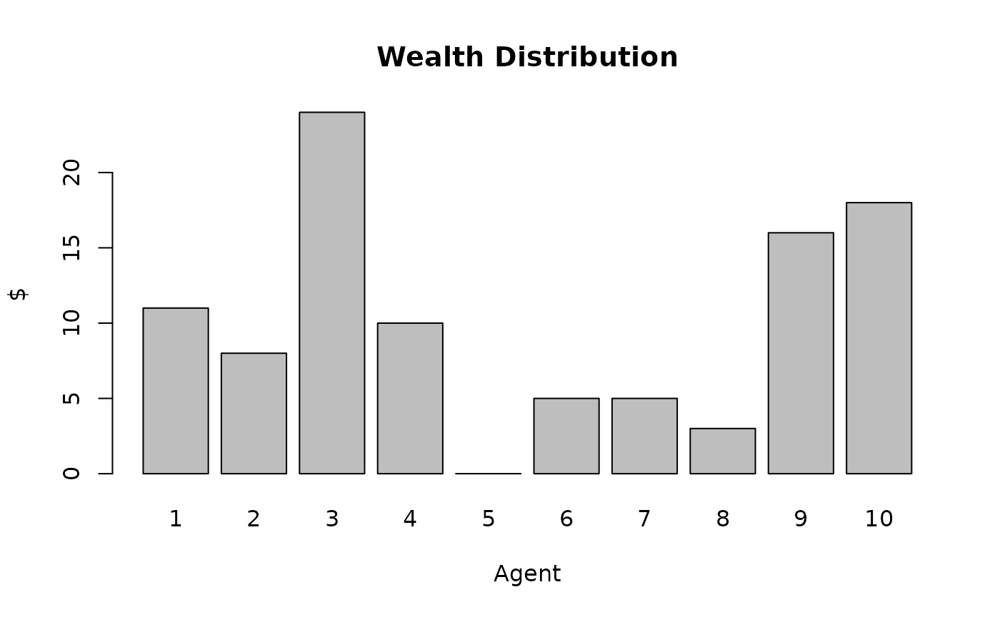

In this model, agents are confined to a bounding box where they move randomly. When two agents are within close range of another, they exchange $1. At the end of the simulation, the wealth distribution is shown as a bar plot. This example was inspired by the “Boltzman Wealth Distribution” model example from Project Mesa.
This simulation takes place in Central Park, New York. The bounding box of the simulation area is shown on the map below.
bounds <- data.frame(latitude = numeric(0), longitude = numeric(0));
# Add the top left point
bounds[nrow(bounds) + 1,] = c(40.772457, -73.975962)
# Add the top right point
bounds[nrow(bounds) + 1,] = c(40.772457, -73.974053)
# Add the bottom left point
bounds[nrow(bounds) + 1,] = c(40.771430, -73.975962)
# Add the bottom right point
bounds[nrow(bounds) + 1,] = c(40.771430, -73.974053)
# Plot them
leaflet::leaflet() %>%
leaflet::addTiles() %>% # Add default OpenStreetMap map tiles
leaflet::addMarkers (data = bounds) # Add agent locationsIn this example, each agent has its own latitude and longitude. The
extended agent class for this follows. For more information on extending
agents, check the extending-agents vignette.
gps_agent <- R6::R6Class("agent",
inherit = villager::agent,
public = list(
age = NULL,
alive = NULL,
children = NULL,
father_id = NULL,
first_name = NULL,
gender = NULL,
health = NULL,
identifier = NULL,
last_name = NULL,
mother_id = NULL,
partner = NULL,
profession = NULL,
latitude = NULL,
longitude = NULL,
initialize = function(identifier = NA,
first_name = NA,
last_name = NA,
age = 0,
mother_id = NA,
father_id = NA,
partner = NA,
children = vector(mode = "character"),
gender = NA,
profession = NA,
alive = TRUE,
health = 100,
latitude = 0,
longitude = 0) {
super$initialize(identifier,
first_name,
last_name,
age,
mother_id,
father_id,
partner,
children,
gender,
profession,
alive,
health)
self$latitude <- latitude
self$longitude <- longitude
},
as_table = function() {
agent_table <- data.frame(
age = self$age,
alive = self$alive,
father_id = self$father_id,
first_name = self$first_name,
gender = self$gender,
health = self$health,
identifier = self$identifier,
last_name = self$last_name,
mother_id = self$mother_id,
partner = self$partner,
profession = self$profession,
latitude = self$latitude,
longitude = self$longitude
)
return(agent_table)
}
)
)The simulation initial conditions are: - There are 10 agents - Each agent starts with $10 - The agents start in the center of the bounding box
initial_condition <- function(current_state, model_data, agent_mgr, resource_mgr) {
# Set the bounding box coordinates by specifying a single point and the max distance that the other corners are
model_data$events <- list(top_left=list(40.772457, -73.975962), bottom_right=list(40.771430, -73.974053))
# Create the initial agents (10 of them)
for (i in seq(10)){
agent_lat <- 40.77197975
agent_long <- -73.9750075
agent <- gps_agent$new(identifier=i, latitude=agent_lat, longitude=agent_long)
agent_mgr$add_agent(agent)
# Create the associated money resource
money <- villager::resource$new(agent$identifier, quantity=10)
resource_mgr$add_resource(money)
}
}The model works by first moving an agent by a random amount. This is equivalent to a random walk. During this process, it’s checked whether or not the agent will over-step the bounding box. If they are, the sign of movement is changed so that they move in the opposite direction from the boundary-thus avoiding stepping outside.
Next, The agent checks to see if it’s within trading distance of any agents other than itself. If it is, $1 is reduced from its resource cache and is added to the neighbor agent.
test_model <- function(current_state, previous_state, model_data, agent_mgr, resource_mgr, village_mgr) {
# Loop over each agent and move them
for (agent in agent_mgr$get_living_agents()) {
# Generate new coordinates
delta_lat <- runif(1, -0.00006, 0.00006)
latitude <- agent$latitude + delta_lat
delta_long <- runif(1, -0.00006, 0.00006)
longitude <- agent$longitude + delta_long
# See if the agent runs out of bounds on the North and West sides
if (longitude < model_data$events$top_left[[2]] ) {
# The agent is too far West
longitude <- agent$longitude - delta_long
}
if (latitude > model_data$events$top_left[[1]]) {
# The agent is too far North
latitude <- agent$latitude - delta_lat
}
# See if the agent runs out of bounds on the South and East sides
if (longitude > model_data$events$bottom_right[[2]]) {
# The agent is too far East
longitude <- agent$longitude - abs(delta_long)
}
if (latitude < model_data$events$bottom_right[[1]] ) {
# The agent is too far South
latitude <- agent$latitude - delta_lat
}
agent$latitude <- latitude
agent$longitude <- longitude
# Avoid trading with itseld
for (neighbor_agent in agent_mgr$get_living_agents()) {
if (neighbor_agent$identifier == agent$identifier) {
next
}
# Check to see if the neighbor is within this agent's trading region
lat_range = abs(neighbor_agent$latitude - agent$latitude)
long_range = abs(neighbor_agent$longitude - agent$longitude)
if (lat_range < 0.000001 || long_range < 0.000001 ) {
# Remove $1 from the agent that's currently moving
money <- resource_mgr$get_resource(agent$identifier)
# Skip the transfer if the agent doesn't have enough money
if (money$quantity <= 0) {
next
}
money$quantity <- money$quantity - 1
# Give it to the neighbor
money <- resource_mgr$get_resource(neighbor_agent$identifier)
money$quantity <- money$quantity + 1
}
}
}
}Create and run a simulation of 10,000 steps.
los_angeles <- village$new("Central_Park", initial_condition, test_model, gps_agent)
simulator <- simulation$new(10000, list(los_angeles))
simulator$run_model()
# Load in data
agent_data <- readr::read_csv("./results/Central_Park/resources.csv")
#> Rows: 100000 Columns: 3
#> ── Column specification ────────────────────────────────────────────────────────
#> Delimiter: ","
#> dbl (3): name, quantity, step
#>
#> ℹ Use `spec()` to retrieve the full column specification for this data.
#> ℹ Specify the column types or set `show_col_types = FALSE` to quiet this message.
# Filter the results down to just the last day
data<-agent_data[agent_data$step == 10000, ]
barplot(data$quantity, names.arg=data$name, main="Wealth Distribution", xlab="Agent", ylab="$")